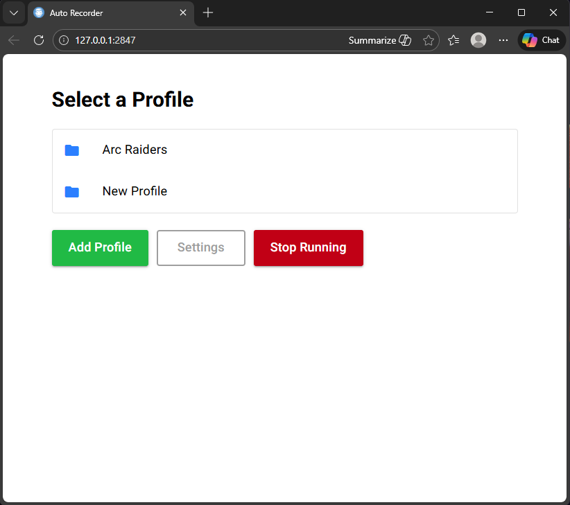
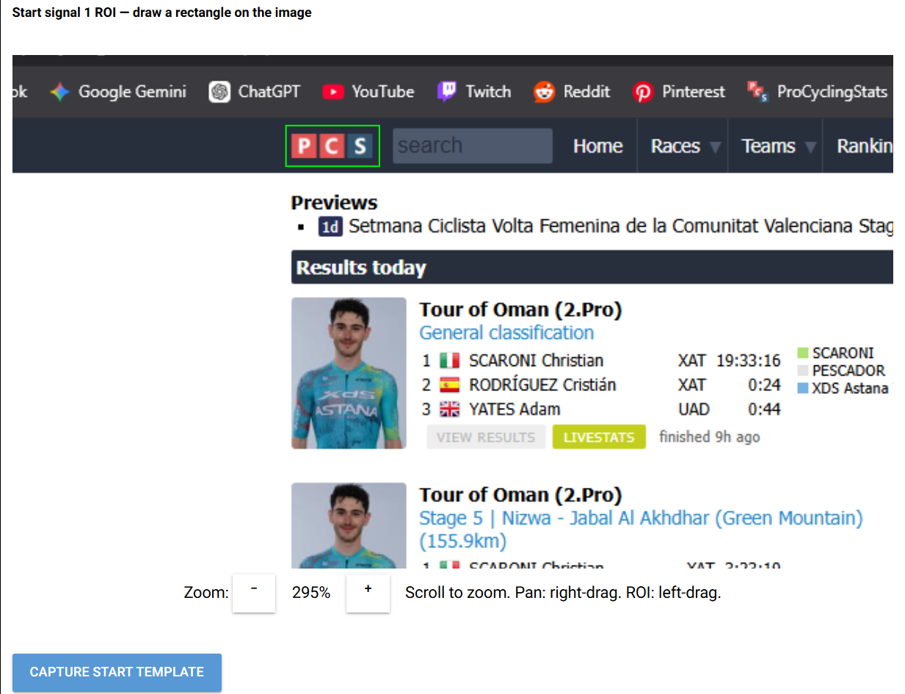
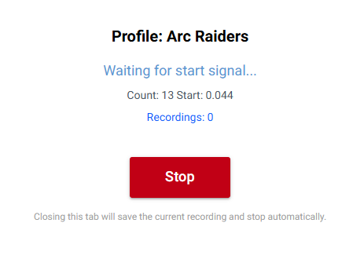
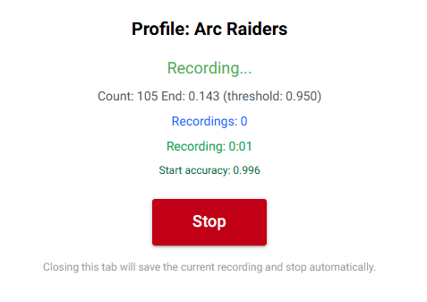

High-performance utility that automates recording using real-time image recognition patterns. Perfect for streaming and recording simultaneously with minimal CPU overhead.
Everything you need for automated recording and streaming workflows
Advanced OpenCV-based image recognition detects specific patterns and triggers recording automatically. No manual intervention required.
Optimized algorithms ensure CPU usage stays below 5%, allowing you to run intensive applications alongside recording without performance impact.
Pre-configured standalone executable compiled with Nuitka. No installation, no dependencies, just download and run.
Seamless integration with OBS Studio via WebSockets. Control recording and streaming workflows programmatically.
Built specifically for streaming and recording at the same time. Capture your content while broadcasting live.
Clean NiceGUI interface provides an intuitive experience. Configure patterns, set triggers, and monitor recording status effortlessly.
Simple workflow, powerful results
Capture or upload reference images that will trigger recording. Set up recognition patterns for your specific use case.
Connect to OBS Studio via WebSocket. Configure recording settings, output paths, and quality preferences.
Launch the application and begin real-time monitoring. The system continuously analyzes screen content using OpenCV.
When patterns are detected, recording starts automatically. Stream and record simultaneously with minimal resource usage.
Explore the interface and watch automated recording in action

Clean and intuitive NiceGUI interface for configuring recognition patterns, setting up OBS connections, and monitoring recording status. The streamlined design ensures zero setup friction.

Define the Region of Interest (ROI) where the application will perform real-time image recognition checks. Select the exact screen area to monitor for pattern detection triggers.

The application continuously monitors the selected ROI using OpenCV, analyzing screen content in real-time while waiting for the start signal pattern to be detected.

When the recognition pattern is detected, recording automatically starts via OBS WebSockets. The interface provides clear visual feedback and real-time status updates throughout the recording process.
Engineered for performance and reliability
Real-time image recognition and pattern matching
Programmatic control of recording workflows
Modern Python web-based interface
Standalone executable compilation
See AutoRecord in action with a complete walkthrough of the automated recording process